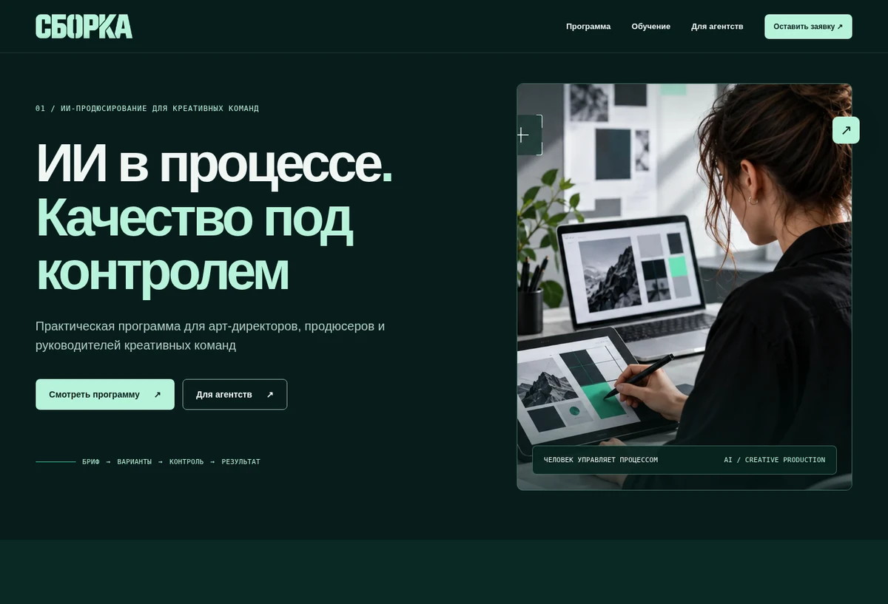
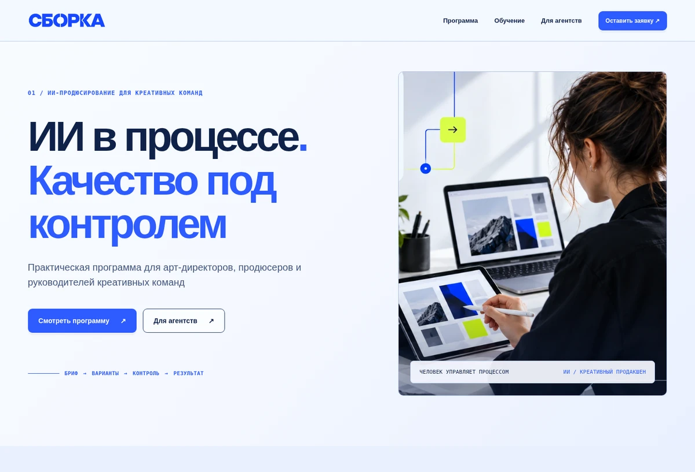
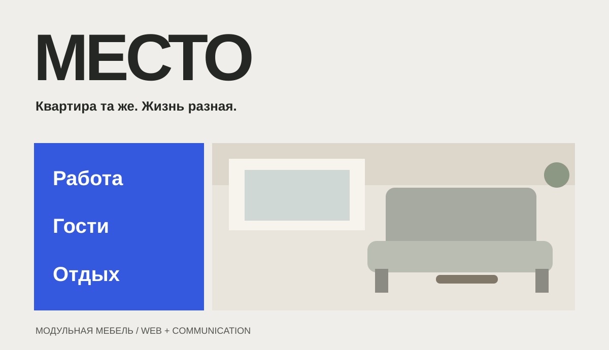
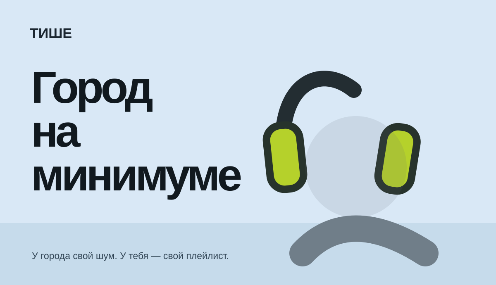
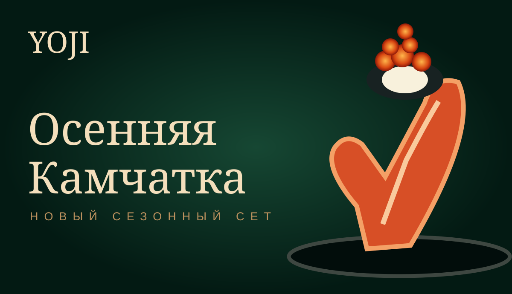
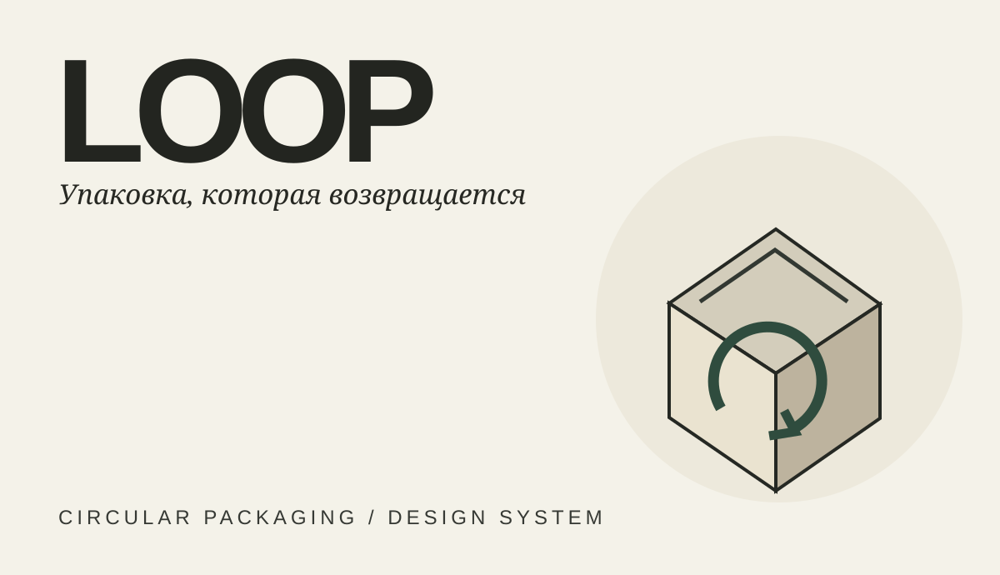
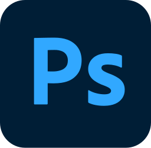
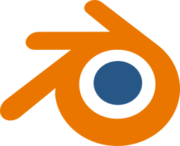
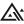

Цифровая лаборатория ↗
Лендинг и учебная платформа в составе единого проекта «СБОРКА»
Смотреть кейс →Веб · Диджитал · Моушн
Открыта к сотрудничеству
Я — Наталья Волченкова,
WOLFART Design Team.
Создаю дизайн, который помогает брендам быть понятыми.
От логики лендинга до движения в кадре — связываю идею, визуальный язык и сообщение
Смотреть работыИзбранные проекты: от брендинга и рекламной коммуникации до цифровых продуктов и веб-дизайна.

Лендинг и учебная платформа в составе единого проекта «СБОРКА»
Смотреть кейс →
Лендинг и учебная платформа в составе единого проекта «СБОРКА»
Смотреть кейс →Два визуальных решения одной задачи. Коммуникации, вебинарная комната и B2B-презентация — внутри кейса.

Адаптивный лендинг и визуальная система для модульной мебели.
Открыть сайт →
Кампания наушников «Город на минимуме»: типографика, визуальная метафора и digital-носители.
Смотреть кейс →
Авторская премиальная концепция для сезонного гастрономического сета.
Смотреть кейс →
Концепция возвратной упаковки и визуальная система цикличного бренда.
Смотреть кейс →Превью выполнены в стилистике работ; оригинальные кейсы и проекты доступны по ссылкам.
Я — Наталья, креативный и коммуникационный дизайнер. Работаю на пересечении веб-дизайна, визуальной коммуникации и моушна
Помогаю превратить идею в ясное визуальное сообщение: выстраиваю структуру, нахожу типографику и ритм, связываю отдельные элементы в систему. Мне важно не только то, как выглядит работа, но и что человек из неё понимает.
Использую классические инструменты дизайна и AI. Выбираю их под задачу, а решения оцениваю по смыслу, цельности и качеству результата.
Живу в Египте.
Рассматриваю только удалённую работу
Работаю со смыслами: определяю, что бренд хочет сказать, кому и зачем. Перевожу это в структуру, визуальный язык и движение, чтобы сообщение было понятным и находило отклик
Структура лендинга, композиция, типографика и адаптивные макеты. Логика страницы, которая помогает понять предложение
Визуальный язык, графика и диджитал-материалы. Сетки, цвет и иерархия, которые связывают элементы в систему
Короткие анимационные ролики. Работа с ритмом, композицией и движением как частью визуального сообщения

Photoshop
Blender
FluxНачинаю с задачи, аудитории и сообщения, которое нужно передать
Связываю сетку, типографику, цвет и движение общей логикой
Объясняю логику решений, обсуждаю обратную связь и дорабатываю дизайн, сохраняя фокус на задаче
Ищу команду и интересные задачи.
Напишите о проекте или вакансии — обсудим, чем я могу быть полезна